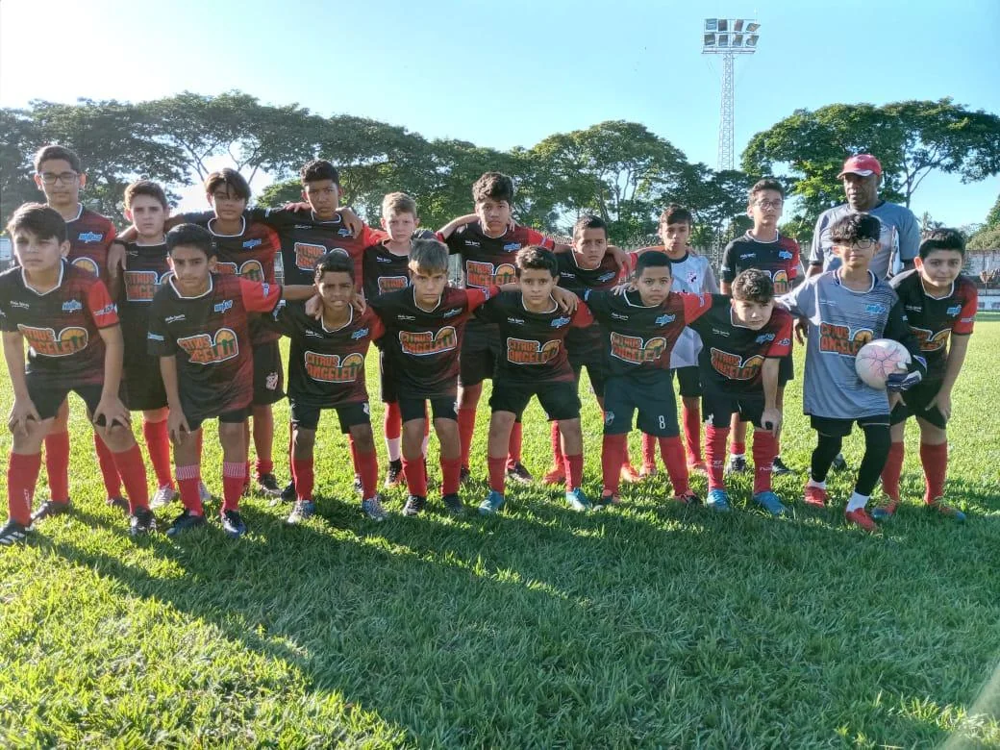

Espaço Aberto
Termo de Colaboração nº 010/2026
a
Em andamentoConhecer o projeto
O Clube Atlético Brotense reúne esporte, história e projetos para crianças e adolescentes em Brotas.

O Clube Atlético Brotense faz parte da história do futebol de Brotas, São Paulo. Fundado em 22 de abril de 1931, o CAB tem o esporte como parte de sua trajetória e de sua relação com a comunidade.
Hoje, essa história também é contada pelos projetos de futebol de campo voltados a crianças e adolescentes, realizados em parceria com o poder público.
Conheça a referência históricaIniciativas de futebol de campo para crianças e adolescentes, em parceria com o poder público.
Termo de Colaboração nº 010/2026
a
ParceriaEmendas municipais
Início
Término
Ver projeto Espaço AbertoParceriaCONDECA
Início
Término
Ver projeto Virando o JogoParceriaEmendas municipais
Início
Término
Ver projeto Bola no PéParceriaCONDECA
Início
Término
Ver projeto Futebol Legal é MacaleParceriaPrefeitura
Início
Término
Ver projeto Macale Girando a BolaParceriaCONDECA
Início
Término
Ver projeto Bola no Pé MacaleParceriaCONDECA
Início
Término
Ver projeto Escola de Futebol de Campo MacaleNos projetos com recursos do CONDECA, o atendimento contempla crianças e adolescentes em situação de vulnerabilidade social ou não.
Registros das equipes, dos treinos e dos encontros que fazem parte do clube.
Fotografias do acervo fornecido pelo Clube Atlético Brotense.
Parcerias que fortalecem projetos e ampliam oportunidades para crianças e adolescentes em Brotas.
Espaço Aberto · 22/06/2026 a 31/12/2026
Informações do projetoBola no Pé · 25/06/2024 a 25/06/2025
Informações do projetoOs documentos serão publicados neste espaço conforme disponibilizados pelo clube.
Projeto iniciado em
Conheça o projeto realizado pelo CAB com recursos de emendas impositivas municipais, por meio do Termo de Colaboração nº 010/2026.
Conhecer o projetoAcompanhe o clube e entre em contato pelos nossos canais oficiais.